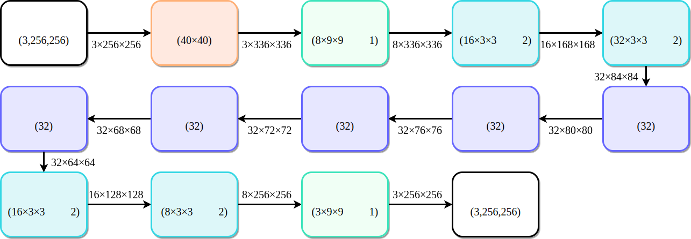
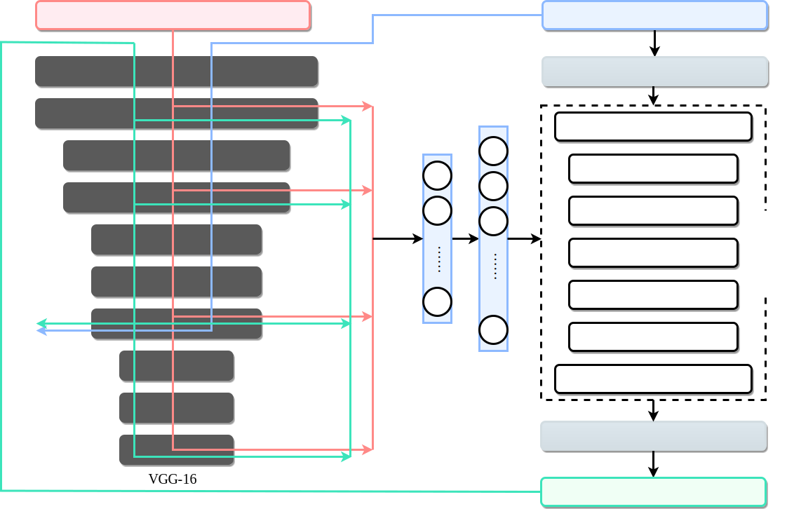
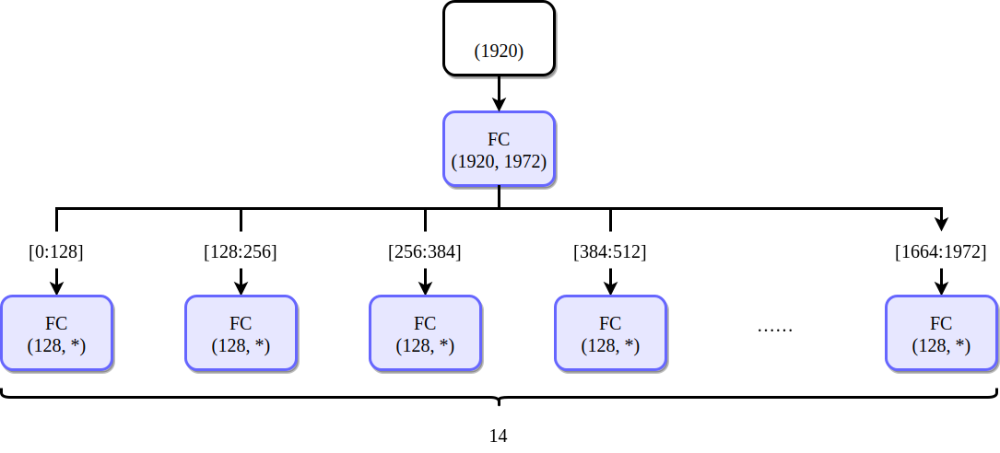
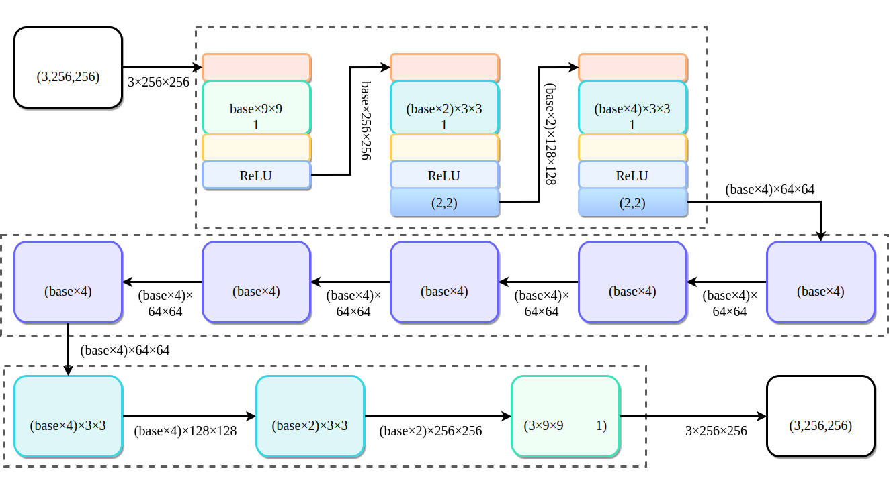
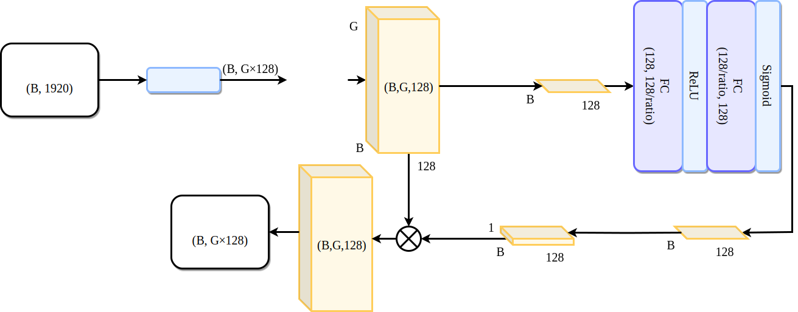
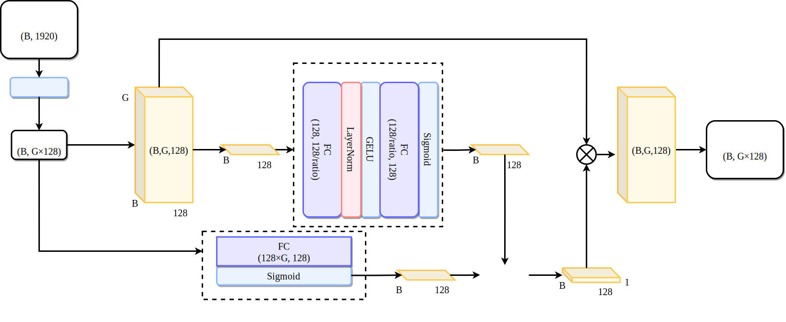
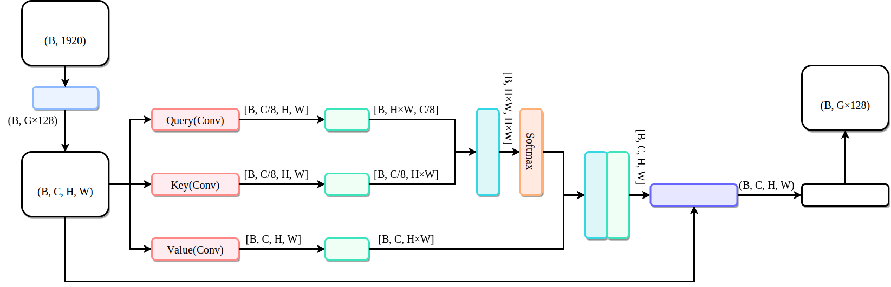
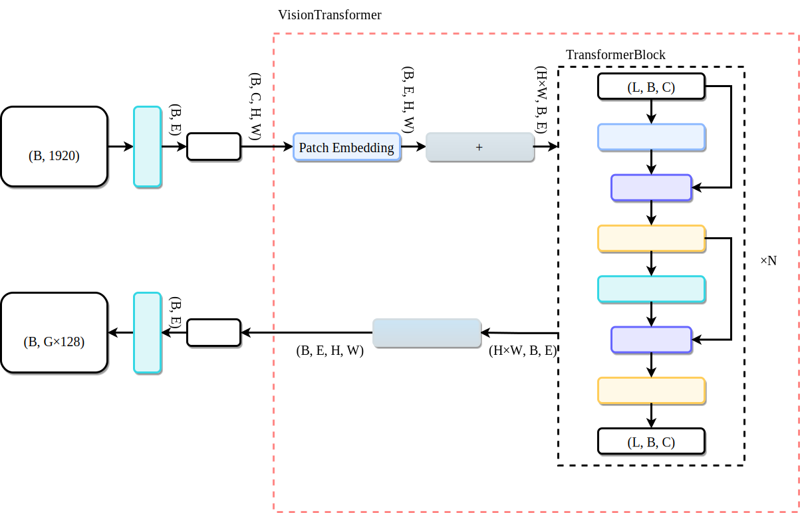

基于改进的 MetaNet 风格迁移算法研究
3.1 MetaNet 算法原理分析
MetaNet意为元网络，是一种基于元学习的深度学习模型，用于解决图像风格迁移中的速度、灵活性和质量平衡问题。本文讨论的超网络和元网络都是一种为其他网络生成权重参数的网络。在早期，Ha等人提出使用静态的超网络为卷积神经网络生成权重参数，并使用动态的超网络为循环网络生成权重参数[34]。
元网络遵循元学习规律，通过分层学习策略实现跨任务知识迁移和单个任务的快速适应，生成的网络更为灵活和全面。元网络的工作采用两级学习，分别是跨任务执行的元级(Meta-Level)模型的缓慢学习和每个任务内执行的基本级(Base-Level)模型的快速学习。
跨任务执行的元级模型缓慢学习意思是模型处理大规模跨任务数据时进行的长期知识积累。学习过程呈现显著的缓慢变化，称为“缓变性”。而且参数更新周期覆盖多个任务集合，优化目标聚焦于提取跨任务的通用先验知识，例如不同任务共享的特征表示空间、优化器超参数配置或归纳偏置模式。缓变学习机制使得元级模型能够捕捉任务间的共性结构，形成可迁移的元知识，如适用于多种任务类型的初始化参数分布或动态调整策略。
每个任务内执行的基本级学习指的是针对具体任务场景中，网络在元级知识支撑下可以实现快速完成任务。当处理单个新任务时，基本级模型从元级输出的先验知识出发，只需通过少量样本或迭代步骤完成任务特定的参数调整。这种快速学习过程通常表现为在元级提供的初始状态基础上，进行局部参数的梯度更新或结构微调，其学习速率显著高于元级。例如在小样本学习场景中，基本级模型可利用元级预训练的特征提取器，仅通过数轮迭代即可在新类别上达到理想性能。
Munkhdalai等人在小规模标本学习领域的研究中，提出了一种通过快速参数化实现一次性分类的元网络，能够快速泛化完成任务。他们设计的元网络核心在于构建一个能够动态生成特殊任务特定参数的元学习器，通过对支持集的快速编码，直接生成目标任务分类器所需的权重参数。这样的快速参数化过程无需重复迭代训练基本模型，而是通过元网络的前向传播实现一次性参数映射，将传统小样本学习中的模型适应时间从分钟级缩短至毫秒级[35]。
在某些情况下，为了得到一个图像变换网络，需要通过SGD在风格图像数据集上多次训练最小化风格图像与输出结果图像的损失。训练的目标是获得一个性能较好的网络，在输入内容图像域与风格图像域之间建立一个映射。元网络的思想与SGD的思想不同，元网络尝试建立一个生成网络的网络，输入风格图像，输出相应的图像变换网络。
基于元网络的图像风格迁移算法构建基于三个逐步递进的条件假设，从传统的参数优化问题过渡到动态网络的生成。令f(x)和h(x)为固定可微函数，记||·||为正则化，考虑优化问题式3.1。将a看作输入内容图像，b看作输入风格图像，f(x)看作内容感知函数，h(x)看作风格感知函数。
3.1.1 条件假设一
固定a=a0，b=b0。这种条件下，对应固定内容图像的固定风格迁移。a0可以表示是苹果、汽车或建筑等某已知的内容图像，而b0表示是印象派、巴罗克风格或抽象派等某特定的绘画风格。
为了解决这个问题，假设f(x)和h(x)是凸函数，则公式3.1是一个关于x的凸优化问题。凸优化问题中，不存在局部最小值，任何一个局部最优解就是全局最优解。基于凸优化问题的特性，该假设的解决方法是使用梯度下降法。梯度下降法是机器学习和深度学习领域最常用的迭代优化算法之一。梯度是一个向量，它的方向指的是目标函数在该点处增长最快的方向。梯度下降则根据梯度信息调整参数的更新方向，使得目标函数逼近最优解。在图像不断更新的过程中，梯度的方向指的是损失函数增长最快的方向，所以根据梯度的反向逐步更新合成图像。经过梯度下降迭代后，使得损失函数最小的图像即是目标图像。但是梯度下降法在实际应用中需要经过数百次的优化迭代才能得到每个样本的收敛结果。每次迭代都涉及损失函数和梯度的矩阵计算，消耗大量的计算资源和时间。
3.1.2 条件假设二
固定b=b0，让a可变。无论输入什么内容a，整个风格迁移过程只能向着一种特定的风格迁移。
为了解决条件假设二的问题，考虑引入一个具有可学习参数w的从a到输出x的映射 $\mathcal{N}:a|\rightarrow x$，将输入内容图像a通过参数w进行计算得到结果x。该过程为如公式3.2所示。为了找到这一映射，把学习映射的过程当作训练神经网络的过程，w包含神经网络的权重和偏置等可学习参数。通过大量的风格图像来训练神经网络，不断地调整参数w的值，将风格图像中的特征和风格信息编码到参数w中。
当神经网络训练至收敛时，参数w就被确定下来。对于每一张新的内容图像，只需要通过图像变换网络的前向传播即可生成对应的图像。一次前向传播的过程大大减少了计算的时间，在条件允许下可实现图像的实时风格迁移。
3.1.3 条件假设三
当a和b都可变。这种条件下，网络需要处理内容和风格两个变量，自适应生成对应的风格迁移结果，对应图像风格迁移的第三个阶段——任意内容的任意风格迁移。
根据条件假设2，已经存在 $\mathcal{N}(\cdot;w)$，引入元学习驱动的每个任务内执行的基本级模型的快速学习。假设存在高层映射 $w=𝑚𝑒𝑡𝑎\mathcal{N}(b;θ)$，通过输入b和参数θ计算图像转换网络的参数w，如公式3.3所示。对于每一个给定的风格特征b，都可以寻找一个最优的w，然后结合参数w和输入a计算得到输出x。
总而言之，元学习经过海量数据训练学习得到元级知识后，当需要迁移新的风格时，只需三个步骤即可生成迁移后的图像：第一步，将新风格图像输入预处理模型得到风格特征；第二步，将提取的风格特征传入训练后的元学习模型中，得到图像转换网络的权重参数w；第三步，将输入内容输入到由w参数化的神经网络中，经过一次前向传播得到迁移后的图像。这种范式突破了传统深度学习模型每一个模型只能完成每一个小任务的局限，实现了通过元级知识积累的任务级快速适配。
3.1.4 MetaNet网络架构
Shen等人提出的元网络由一个预训练的VGG-16网络、元学习器和图像转换网络组成，思想是元网络两级学习中的每个任务内执行的基本级模型的快速学习。VGG-16网络从风格图像中提取风格特征，然后将纹理特征输入到元学习器中。元学习器经过大量风格图像的特征训练后，将风格特征投影到图像变换网络的参数中。图像转换网络经过元学习器填充权重参数后，便形成了某种风格的迁移转换网络。通过这种方式，他们首次提供了一种新的方法，在一次前馈传播中接受新风格图像并生成对应图像的图像变换网络[36]。这种方法的思想是让模型学习如何学习，即学习图像转换网络的生成方式，从而实现对新风格的快速适应。
Shen提出的一个图像转换网络版本结构如图3.1所示，其中每个残差块由2层卷积层组成，5个残差块共10层卷积，整个图像转换网络共14层卷积层。下采样部分首先经过较大(40×40)的反射填充层将边界扩大，然后经第一个9×9卷积层将通道数增加到8，最后依次经过第二第三层3×3卷积层将输出特征图尺寸缩小一半，通道数翻倍；上采样部分首先依次经过第一第二层3×3反卷积层减少通道数和恢复特征图尺寸，然后经过第三层9×9卷积层将通道数降至3，从而输出正常的三通道彩色图像。每一个残差块都是两层3×3不填充卷积层，将输出特征图的长和宽各减少4。经过5个残差块后与下采样块连接。除了第一层卷积层和最后一层卷积层之外，每个卷积层后面接上一个实例批次归一化层和一个激活函数ReLU层，为了简化起见，图中省略。在模型训练阶段，绿色的卷积层卷积核与元网络一同训练。其他卷积层卷积核和残差块的卷积核固定不参与训练，后续不进行更新。在模型推理阶段，所有淡蓝色的卷积层卷积核和残差块卷积核都由元学习器生成。
元网络的整体架构如图3.2所示。左侧将风格图像输入到预训练的VGG-16模型中，将VGG-16模型的第3、8、15、22层输出作为风格特征。元学习器指的是中间部分的全连接层。风格特征经过元学习器的两个全连接层得到对应图像变换网络中每个不参与训练的卷积层卷积核参数。其中第一个全连接层的输入维度为风格特征的维度，输出维度为1972；第二个全连接层将前一层的输出分组映射到图像生成网络各卷积层的卷积核权重参数。上述提到图像转换网络共需生成参数14层，每层的权重参数由128维向量通过全连接层生成，共得维度14×128维，即1972维。同时，通过预训练的VGG-16分别计算风格迁移后的生成图像的风格损失和内容损失。

图3.1图像转换网络的结构图

图3.2MetaNet整体架构
在元学习器的风格图像特征处理方面，假设输入风格图像的大小为256×256，那么通过预训练VGG-16模型提取的特征输出尺寸分别为(64，256，256)、(128，128，128)、(256，64，64)、(512，32，32)。假设取Gram矩阵作为特征进行计算，输出尺寸为(64，64)、(128，128)、(256，256)、(512，512)，依靠这些尺寸特征生成对应的权值，可想而知计算量是非常庞大的。Shen提到，只计算卷积层输出的均值和标准差作为风格特征。通过这个思路进行计算，风格特征的维度变为(64+128+256+512)×2，即1920维。但是直接使用这1920维特征向量生成14层卷积层的卷积核权重参数还是比较困难，所涉及参数量仍然非常庞大，十分占用硬件资源。为了解决这个问题，设定图像转换网络的每层不参与训练的卷积层卷积核权重参数由单独的128维向量通过全连接层生成，14层卷积层共计1972个输出，元学习器将这些输出分组映射到图像转换网络中的每层权重参数，“*”表示图像转换网络中某层卷积层所需的参数数量，具体结构如图3.3所示。

图3.3元学习器分组映射
3.1.5 损失函数设计
Shen等人设计的损失函数由图像内容损失、图像风格损失和图像全变分损失组成。
图像内容损失定义为图像风格迁移后的图像与原输入内容图像的内容特征均方误差。如图3.2所示，内容特征通过预训练VGG-16模型的relu3_3层输出得到。均方误差是比较常用的误差，通过预测值与真实值之间的差值平方和的均值计算得到。均方误差计算公式如式3.4，其中 $f(x_i)$ 为预测值，n为计算样本总数。均方误差的函数曲线光滑连续且处处可导，随着误差减小，梯度也随之减小，这一特性有利于训练过程中的收敛。
全变分损失的目的提高风格迁移后图像的质量，保持图像平滑。在图像生成的过程中，图像上的微小噪声会对结果产生比较大的影响，且受噪声污染的图像的总变分比无噪声图像的总变分大。所以将总变分损失作为正则项引入到损失函数中，以此达到一定程度上的降噪处理。
3.2 模型改进设计
3.2.1 图像转换网络结构设计
内容图像在输入图像转换网络时，原网络设置卷积层的卷积核步幅大小为2，在特征途中每隔2个像素进行卷积操作，以此进行下采样操作。虽然这种下采样方式的计算速度较快，但是容易出现特征信息提取丢失问题。如果一张高频细节比较丰富图像经过每隔2个像素的下采样操作，得到的结果相当于丢弃一半的空间信息。同时，固定的步幅卷积仅仅通过加权求和进行特征聚合，缺乏了对局部特征的选择性提取。所以，在改进方法中，将下采样卷积层的卷积核步幅大小设置为1，同时在后面增加一层2×2的最大池化层，以此进行下采样操作。在上采样操作中，网络通过双线性插值的方法代替原来固定缩放因子的方式，并且借助PyTorch深度学习框架的相关函数，动态尺寸计算实现恢复原来的空间尺寸。双线性插值法通过在两个方向上分别进行线性插值来得到未知点的像素值。
经过改进后的图像转换网络结构如图3.4，整个图像转换网络总卷积层数不变，增加设置base作为卷积层的通道基数，控制卷积通道变化，每经过一个下采样块，输出特征图的尺寸就缩小一半，同时通道数加倍。原来设计中base为8，改进后base为32，增加图像转换网络的通道数以获得更多更全面的特征。与原来的设计一致，仍然保持第一层卷积层和最后一层卷积层（绿色卷积层）卷积核与元学习器一同训练。其他卷积层卷积核和残差块的卷积核参数使用Kaiming Normal正态初始化固定，后续不参与训练不进行更新，在推演时由元学习器生成。另外说明的是，残差块内部和上采样部分仍然包含反射填充层、实例归一化层和ReLU激活层，为简便起见，图中省略。下采样部分中引入最大池化层，通过选取2×2窗口中的最大值作为输出，最大值能够灵敏地捕捉到图像中最强的特征，同时能够抑制噪声信号。池化窗口使用2×2对应原来下采样卷积核步幅为2，以此达到相同的下采样效果。为了尽可能减少不同图像间亮度、对比度差异并且同时保留各图像的纹理风格信息，改进的网络中引入实例归一化层。实例归一化层可以针对单个样本单通道进行归一化，保留图像像素的细节。除了实例归一化，还有同批次所有样本同通道的批次归一化、单样本的单层所有通道的层归一化和单样本通道分组的分组归一化。与其他归一化方法相比，实例归一化更适用于图像风格迁移场景，而且忽略跨样本统计信息，避免风格混合不明确。

图3.4改进后的图像转换网络
3.2.2 注意力模块设计
原网络结构中没有包含注意力机制。在模型改进中，针对元学习网络的模型结构分别设计了通道注意力模块、自注意力模块和Transformer模块。加入注意力模块后网络流程如图3.5所示，注意力机制模块用于增强元学习器的特征处理能力[37]。
图3.5网络流程图
通道注意力模块通过对特征图的通道维度进行学习，能够有效学习不同通道特征的重要程度。通道注意力模块首先对输入特征进行全局维度的压缩，获取通道维度上的全局统计量，随后通过全连接层对通道统计信息进行非线性变换，生成与通道数量一致的权重向量，最后将生成的通道权重与原始输入特征进行逐通道相乘，实现对重要通道特征的增强和对次要通道特征的抑制。在本研究模型中，预训练的VGG模型将提取到的1920维风格特征输入到元学习器中并前向传播，经过全连接层生成G×128个输出，然后将一整批次大小的G×128个特征输入到基础通道注意力机制模块的输入层中。添加的基础通道注意力模块如图3.6所示，其中B表示批次大小，G表示分组数，此处G为14，即图像转换网络中不参与训练更新学习的14层卷积层。在基础通道注意力模块中，首先将输入分组重塑为三维的特征。接着基于SENet的思想，通过全局平均池化压缩三维分组信息形成B×128的二维特征，然后将二维特征输入到全连接块学习分组通道间的权重。全连接块包括两层全连接层和两层激活函数层，全连接层由ratio变量控制。二维特征经全连接块压缩激活处理后，再通过维度恢复操作还原为与输入分组维度匹配的特征，得到通道特征的注意力权重向量。最后将三维特征和通道特征的注意力权重通过张量广播相乘，得到添加注意力机制后的G×128个输出。这G×128个输出经过后续G个全连接层分组映射连接到图像转换网络中不参与训练的卷积层卷积核权重参数。

图3.6含基础通道注意力模块的元学习器
基础通道注意力仅关注全局信息。为了进一步考虑局部信息，对基础通道注意力机制进行增强改进，设计增强通道注意力机制模块，如图3.7所示。含增强通道注意力模块的元学习器输入同样为批次大小的1920维风格特征，经过隐藏层映射为G×128的特征，再输入到增强通道注意力模块中。与基础通道注意力模块相比，增强通道注意力模块主要引入全局权重和分组权重两部分，通过调整它们间的比例加权平衡局部与全局的特征信息。分组权重部分参考原来基础通道注意力模块的计算权重方式，学习每组内部的通道信息。另外，分组权重部分使用GELU（Gaussian Error Linear Unit）激活函数代替原来的ReLU激活函数，GELU函数可以近似地表达为公式3.5。GELU函数在x小于0的部分取值并不为零，在一定程度上可以缓解神经元失活的问题，避免梯度消失。分组权重模块还对全连接层的输出进行层归一化操作，提升模型的表达能力。全局权重由一层全连接层和一层Sigmoid激活函数层组成，融合所有分组的全局信息。

图3.7含增强通道注意力模块的元学习器
自注意力机制能够捕捉输入特征图中不同位置的长距离依赖关系，将每个元素同时当成查询（Query）、键（Key）和值（Value），通过三者的计算实现对上下文的感知表示。自注意力机制模块设计如图3.8。元学习器在得到提取的风格特征并经过全连接层之后，将批次大小和G×128参数数量二维的特征空间变换为批次大小、通道数、高度和宽度的四维伪空间，其中通道数为参数数量G×128，高度和宽度均为1，以便于后续的投影和矩阵运算。随后将该尺寸的特征输入到自注意力模块的输入层，分别计算查询投影、键投影、值投影。查询投影通过降维生成查询向量，查询向量用于捕捉“需要关注什么”，能够聚焦于关键的语义信息，从而为后续的注意力权重计算提供引导。键投影通过降维生成键向量，键向量表示“被关注的内容”，能够描述输入特征中各个位置的特征表示，与查询向量共同计算位置之间的相似度。值投影保持原来的维度生成值向量，值向量表示“实际传递的信息”，同时也保留了输入特征的完整信息。计算得到查询向量、键向量和值向量后，将查询向量和键向量重塑为对应的尺度，使其适合进行矩阵乘法，计算每对位置的相似度。通过Softmax函数处理后，生成注意力权重矩阵。接着将值投影与注意力权重矩阵进行矩阵乘法，最后用参数γ进行残差连接，对值特征进行加权聚合，增强重要位置的特征。残差链接可以防止深层网络退化，保留原始特征中的重要信息，使得模型的训练较为稳定，参数γ用于调整残差连接的权重。

图3.8含自注意力模块的元学习器
Transformer基于自注意力机制实现捕捉序列中元素间的全局依赖关系。在自然语言处理领域，Transformer被广泛应用于机器翻译、文本生成、问答系统等任务，但经过一定修改之后，可以扩展应用在图像处理领域。本设计中简单构建一个应用于视觉处理领域的Vision Transformer模块（以下简称ViT模块），具体流程如图3.9所示。首先预训练的VGG模型对输入风格图像进行特征提取，得到1920维风格特征向量。接着风格特征向量输入到含Transformer的元学习器中，经过全连接层将1920维映射到指定的Embed大小，再通过变换操作得到关于批次大小、通道数、高度和宽度的四维伪空间，其中通道数与 Embed 大小一致。得到四维伪空间特征后进入到ViT模块，ViT模块首先对输入的四维伪空间数据进行1×1卷积的Patch Embedding处理。1×1卷积能够在不改变特征图空间维度的前提下，对通道维度进行线性组合，从而将每个空间位置的特征转换为嵌入向量。接着将嵌入向量进行展平操作，并重塑为关于长度、批次大小和通道数的三维空间特征。该三维空间特征会输入到若干个Transformer块中进行加强处理。其中每个Transformer块由多头注意力模块、残差连接、层归一化、前馈网络等部分组成。三维特征进入多头注意力机制模块，通过多个不同的注意力头并行计算，从不同角度捕获全局上下文依赖关系，获取序列中各元素之间的全局关联信息。与单一的注意力机制相比，多头注意力机制显然扩展了模型对特征的处理和理解能力。随后特征通过残差连接与输入特征相加，再进行层归一化操作，稳定输出并防止梯度消失问题。最后通过前馈网络增强数据的非线性表示能力，使模型能够学习到更复杂的特征表示。

图3.9含Transformer的元学习器
3.3 本章小结
本章围绕基于改进的MetaNet的图像风格迁移算法展开，介绍了MetaNet的核心原理、网络结构以及改进设计。
在MetaNet的算法原理部分，阐述了基本级模型通过元级模型积累的元级知识在单任务上的快速执行。通过三个条件假设，逐步推导从固定内容与风格的迁移问题过渡到任意内容与风格的动态生成场景，介绍了元网络通过生成图像转换网络参数实现快速风格迁移的核心思想。接着介绍了MetaNet的整体架构，包括特征提取器、元学习器和图像转换网络三部分。最后介绍内容损失、风格损失和全变分损失组成的损失函数体系，确保生成图像在内容、风格和结构上的一致性。
在模型改进设计中，针对原网络的不足做出两点改进：一是对图像转换网络进行网络层上的优化；二是对元学习器引入注意力模块。在图像转换网络的改进上，使用池化层代替原来的固定步幅卷积下采样，使用双线性插值代替原来的固定缩放因子，还引入通道基数超参数和实例归一化层，优化网络结构。在元学习器的改进上，引入通道注意力、自注意力和Transformer模块，用于提升元学习器的特征处理能力。
本章通过理论分析以及改进设计，搭建起新的图像风格迁移模型，为后续算法的实验验证奠定基础。
[34] Ha D, Dai A, Le QuocV. HyperNetworks[M/OL]//Hypernetworks in the Science of Complex Systems. 2014 151-176.
[35] Munkhdalai T, Yu H. Meta Networks[C]//International conference on machine learning. MLR, 2017 2554-2563.
[36] Shen F, Yan S, Zeng G. Neural Style Transfer via Meta Networks[C]//Proceedings of the IEEE Conference on Computer Vision and Pattern Recognition. 2018 8061-8069.
[37] 王树声,李文书.基于神经网络与注意力的任意图像风格迁移研究综述[J].软件工程,2025,28(02) 27-31.